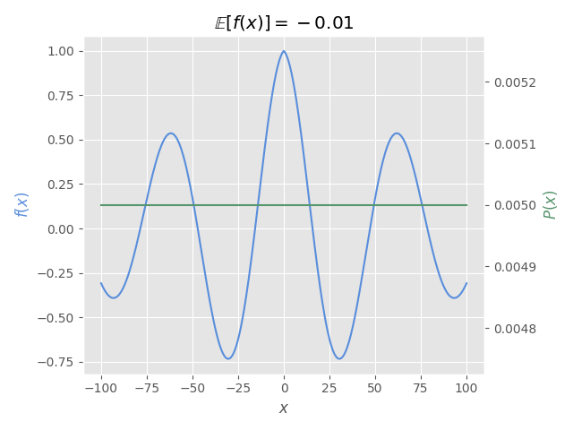
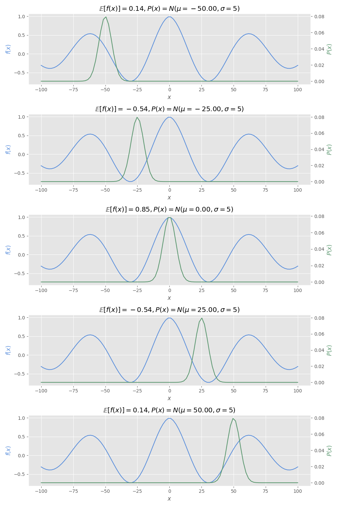
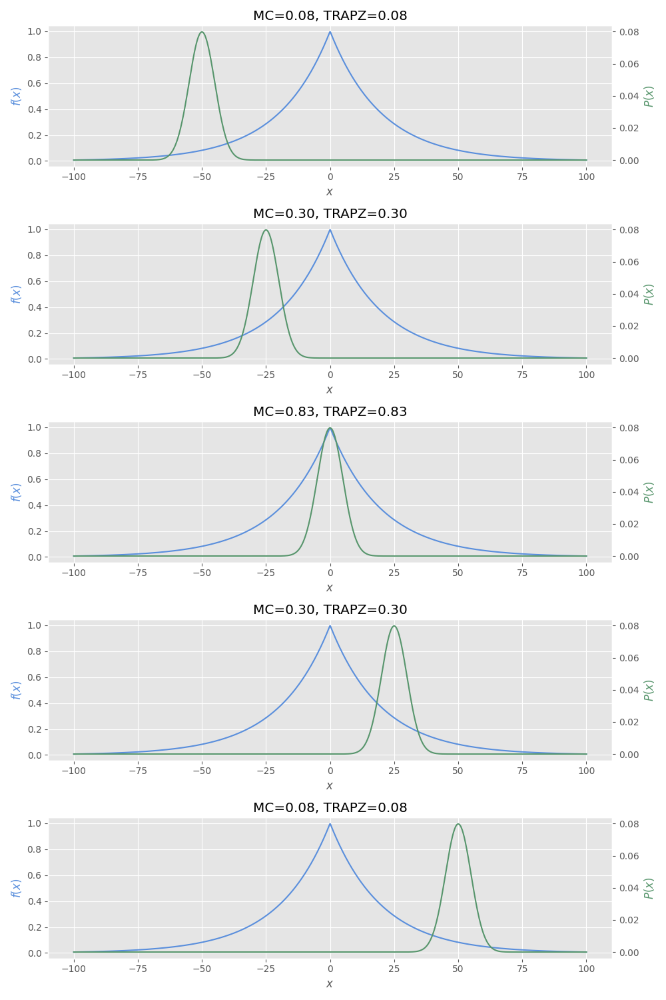

Lab 06.01.01: Expectations, Gradients and Reparameterization Trick
Contents
# init repo notebook
!git clone https://github.com/rramosp/ppdl.git > /dev/null 2> /dev/null
!mv -n ppdl/content/init.py ppdl/content/local . 2> /dev/null
!pip install -r ppdl/content/requirements.txt > /dev/null
Lab 06.01.01: Expectations, Gradients and Reparameterization Trick¶
In this laboratory you’ll compute gradients using different approaches, including numerical methods, Monte Carlo sampling and the reparameterization trick.
## Ignore this cell
!pip install ppdl==0.1.5 rlxmoocapi==0.1.0 --quiet
import inspect
from rlxmoocapi import submit, session
from tensorflow_probability.python.math import integration
course_id = "ppdl.v1"
endpoint = "https://m5knaekxo6.execute-api.us-west-2.amazonaws.com/dev-v0001/rlxmooc"
lab = "L06.01.01"
Log-in with your username and password:
session.LoginSequence(
endpoint=endpoint,
course_id=course_id,
lab_id=lab,
varname="student"
);
First, let us import the required libraries:
import matplotlib.pyplot as plt
import tensorflow as tf
import tensorflow_probability as tfp
tfd = tfp.distributions
tfb = tfp.bijectors
plt.style.use("ggplot")
COLOR1 = "#598EDC"
COLOR2 = "#57956C"
Task 1¶
In this task you have to compute a numerical approximation of the expectation of any function \(f(x)\) given any probability distribution \(p(x)\), as follows:
You must implement the expected_value_trapz function, which has the following parameters:
f: atf.functionrepresenting \(f(x)\).dist: atfd.Distributionrepresenting \(p(x)\).integration_range: a tuple with the range that must be used for the numerical approximation of the integral.n_points: number of points for the numerical approximation.
You must use the trapezoidal rule to approximate the integral, please use the tensorflow_probability’s implementation tfp.math.trapz:
def expected_value_trapz(f, dist, integration_range, n_points=1000):
...
Lets test the function with the following values:
@tf.function
def function(x):
return tf.exp(-0.01 * tf.abs(x)) * tf.cos(0.1 * x)
integration_range = (-100, 100)
dist = tfd.Uniform(
low=integration_range[0],
high=integration_range[1]
)
n_points = 1000
The following figure shows how must be the expectation for the given function and probability distribution.
You must obtain the same value that is shown in this image:

fig, ax = plt.subplots()
ax2 = ax.twinx()
x_range = tf.cast(tf.linspace(*integration_range, 1000), "float32")
ax.plot(x_range, function(x_range), color=COLOR1)
ax.set_xlabel("$x$")
ax.set_ylabel("$f(x)$", color=COLOR1)
ax2.plot(x_range, dist.prob(x_range), color=COLOR2)
ax2.set_ylabel("$P(x)$", color=COLOR2)
ax2.grid(False)
e_val = expected_value_trapz(function, dist, integration_range, n_points)
ax2.set_title(r"$\mathbb{E}[f(x)]=" + f"{e_val:.2f}$")
fig.tight_layout()
Now, let’s change the probability distribution to see differences in the expectation.
You must obtain the following result if your implementation of expected_value_trapz is correct:

dists = [
tfd.Normal(loc=mean, scale=5)
for mean in tf.cast(tf.linspace(-50, 50, 5), "float32")
]
fig, axes = plt.subplots(5, 1, figsize=(10, 15))
for i in range(5):
ax = axes[i]
ax2 = ax.twinx()
dist = dists[i]
x_range = tf.cast(
tf.linspace(*integration_range, 100),
"float32"
)
ax.plot(x_range, function(x_range), color=COLOR1)
ax.set_xlabel("$x$")
ax.set_ylabel("$f(x)$", color=COLOR1)
ax2.plot(x_range, dist.prob(x_range), color=COLOR2)
ax2.set_ylabel("$P(x)$", color=COLOR2)
ax2.grid(False)
e_val = expected_value_trapz(function, dist, integration_range, n_points)
ax2.set_title(
r"$\mathbb{E}[f(x)]=" + f"{e_val:.2f}, P(x)=N(\\mu={dist.mean():.2f}, \\sigma=5)$"
)
fig.tight_layout()
student.submit_task(namespace=globals(), task_id="T1");
Task 2¶
In this task, you must implement an expectation using the Monte Carlo approach, i.e.:
You have to implement the expected_value_mc function that has the following parameters:
f: atf.functionrepresenting \(f(x)\).dist: atfd.Distributionrepresenting \(p(x)\).n_samples: number of samples to use for the Monte Carlo approximation.
Note: the
expected_value_mcfunction must be implemented usingtensorflowoperations only. You can’t usenumpyneither Python’s native functions likesumorforloops.
def expected_value_mc(f, dist, n_samples):
...
Let’s compute the expected value for the following values:
@tf.function
def function(x):
return tf.exp(-0.05 * tf.abs(x))
dist = tfd.Normal(loc=1, scale=1)
n_points = 10_000
integration_range = (-10, 10)
The following cell must return values similar to:
❱ print(f"Monte Carlo: {e_mc}")
Monte Carlo: 0.9449480175971985
❱ print(f"Trapz integration: {e_trapz}")
Trapz integration: 0.9440837502479553
e_mc = expected_value_mc(function, dist, n_points)
e_trapz = expected_value_trapz(
function, dist, integration_range, n_points
)
print(f"Monte Carlo: {e_mc}")
print(f"Trapz integration: {e_trapz}")
Now, we can see a comparison between expected_value_mc and expected_value_trapz functions using different distributions.
If your implementation is correct, the following cell must output the following image:

dists = [
tfd.Normal(mean, 5)
for mean in tf.cast(tf.linspace(-50, 50, 5), "float32")
]
fig, axes = plt.subplots(5, 1, figsize=(10, 15))
for i in range(5):
ax = axes[i]
ax2 = ax.twinx()
dist = dists[i]
x_range = tf.cast(tf.linspace(-100, 100, 1000), "float32")
ax.plot(x_range, function(x_range), color=COLOR1)
ax.set_xlabel("$x$")
ax.set_ylabel("$f(x)$", color=COLOR1)
ax2.plot(x_range, dist.prob(x_range), color=COLOR2)
ax2.set_ylabel("$P(x)$", color=COLOR2)
ax2.grid(False)
e_mc = expected_value_mc(function, dist, 10000)
e_trapz = expected_value_trapz(function, dist, (-100, 100), 10000)
ax2.set_title(f"MC={e_mc:.2f}, TRAPZ={e_trapz:.2f}")
fig.tight_layout()
student.submit_task(namespace=globals(), task_id="T2");
Task 3¶
In this task you must compute the gradients with respect to a function’s parameter \(\theta\) given it’s expectation.
Remember that the gradient of an expectation is equal to the expectation of the gradients:
To achieve this, compute \(\underset{p(x)}{\mathbb{E}}[\underset{\theta}{\nabla}f(x, \theta)]\) using the Monte Carlo method. You must implement the expectation_gradients function which has the following parameters:
f: atf.functionrepresenting \(f(x, \theta)\).theta:tf.Tensorto compute the gradients.dist: atfd.Distributionrepresenting \(p(x)\).n_samples: number of samples to use for the Monte Carlo approximation.
Note: you must compute the gradients using
tf.GradientTape:
def expectation_gradients(f, theta, dist, n_samples):
...
Let’s compute the gradients using the following values:
@tf.function
def function(x, theta):
return tf.exp(theta * tf.abs(x))
theta_0 = tf.Variable(-0.05)
dist = tfd.Normal(loc=0, scale=1)
n_samples = 1000
The following cell must return values similar to:
❱ print(expectation_gradients(function, theta_0, dist, n_samples))
tf.Tensor(0.7384695, shape=(), dtype=float32)
print(expectation_gradients(function, theta_0, dist, n_samples))
Now, let’s see a comparison between the gradient’s estimation using a large number of samples vs an expectation using batches.
The following cell must output values similar to:
❱ print(large_expectation)
tf.Tensor(1.0713083, shape=(), dtype=float32)
❱ print(batches_expectation)
tf.Tensor(1.0762898, shape=(), dtype=float32)
# large sample
dist = tfd.Normal(loc=1, scale=1)
large_expectation = expectation_gradients(function, theta_0, dist, int(16e3))
# batches
batches_expectation = tf.reduce_mean(
[
expectation_gradients(function, theta_0, dist, 16)
for _ in range(1000)
]
)
print(large_expectation)
print(batches_expectation)
student.submit_task(namespace=globals(), task_id="T3");
Task 4¶
In this task you must compute the gradients with respect of a function’s parameter \(\theta\) given its expectation using a probability distribution which also has \(\theta\) as a parameter.
Remember that this can’t be directly computed using the Monte Carlo approach since the distribution’s pdf also depends on \(\theta\):
From the last equation:
You must implement the gradients_dependence function which has the following parameters:
f: atf.functionrepresenting \(f(x, \theta)\).theta:tf.Tensorto compute the gradients.dist_f: a function that generates atfd.Distributiongiven athetavalue.n_samples: number of samples to use for the Monte Carlo approximation and the trapezoidal rule.integration_range: integration range to use in the trapezoidal rule.
Note: you must numerically approximate the left part of the equation using
tfp.math.trapzand the right part using the Monte Carlo method. You must compute the gradients usingtf.GradientTapeusing puretensorflowcode. Usen_samplesfor both the trapezoidal and Monte Carlo approaches.
def gradients_dependence(
f, theta, dist_f, n_samples,
integration_range
):
...
Let’s compute the gradients using the following values:
@tf.function
def function(x, theta):
return tf.exp(theta * tf.abs(x))
def dist_function(theta):
return tfd.Normal(loc=theta, scale=1)
theta_0 = tf.Variable(-1.0)
integration_range = (-100, 100)
n_samples = 10_000
The following cell must output values similar to:
❱ print(grads_dep)
tf.Tensor(0.4767751, shape=(), dtype=float32)
grads_dep = gradients_dependence(
function, theta_0, dist_function,
n_samples, integration_range
)
print(grads_dep)
student.submit_task(namespace=globals(), task_id="T4");
Task 5¶
As you noted in the previous task, computing the gradients when there’s a dependence between the distribution’s pdf and the function’s parameters is not an easy task, specially, it involves a numerical integration step that does not scale when We have parameters in higher dimensions.
For this reason, We need the reparameterization trick, in this task you must compute the gradients for this distribution:
And this reparameterization:
Remember that after reparameterization, the gradients are:
This means, you can compute the gradients using the Monte Carlo method:
In this task, you must implement the gradients_reparameterization function which has the following parameters:
f: atf.functionrepresenting \(f(x, \theta)\).theta:tf.Tensorto compute the gradients.dist: atfd.Distributionrepresenting \(p(x')\).n_samples: number of samples to use for the Monte Carlo approximation and the trapezoidal rule.rep_f: atf.functionrepresenting \(g(x', \theta)\).
Note: your implementation must use
tf.GradientTapeand you must use puretensorflowcode.
def gradients_reparameterization(
f, theta, dist, n_samples, rep_f
):
...
Let’s compute the gradients using the following values:
@tf.function
def function(x, theta):
return tf.exp(theta * tf.abs(x))
@tf.function
def rep_f(x, theta):
return x + theta
dist = tfd.Normal(loc=0, scale=1)
theta_0 = tf.Variable(-2.0)
n_samples = 100_000
integration_range = (-100, 100)
The following cell must return values similar to:
❱ print(gradients_rep)
tf.Tensor(0.16392285, shape=(), dtype=float32)
❱ print(gradients_dep)
tf.Tensor(0.16380094, shape=(), dtype=float32)
gradients_rep = gradients_reparameterization(
function, theta_0, dist, n_samples, rep_f
)
gradients_dep = gradients_dependence(
function, theta_0, dist_function,
n_samples, integration_range
)
print(gradients_rep)
print(gradients_dep)
As you can see, the reparameterization trick allows a simpler approximation of the gradients that only depends on the Monte Carlo method and doesn’t require the trapezoidal rule. This allows probabilistic distributions inside of neural networks while allowing backpropagation.
student.submit_task(namespace=globals(), task_id="T5");